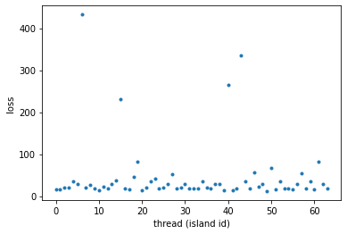
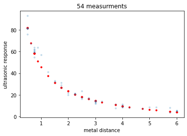

Evolving CGPs in multiple threads¶
In this tutorial we will learn how to evolve multiple Cartesian Genetic Programs in parallel CPUs. We use the same problem used in a previous tutorial performing the same evolution in a pygmo archipelago (that is in an island model where each island maintains a population of solutions and evolves them)
[1]:
# Some necessary imports.
import dcgpy
import pygmo as pg
import numpy as np
# Sympy is nice to have for basic symbolic manipulation.
from sympy import init_printing
from sympy.parsing.sympy_parser import *
init_printing()
# Fundamental for plotting.
from matplotlib import pyplot as plt
%matplotlib inline
[2]:
# Here we define our problem and solution strategy. In this case a simple Evolutionary Strategy acting on
# a CGP with no added constants.
X, Y = dcgpy.generate_chwirut2()
ss = dcgpy.kernel_set_double(["sum", "diff", "mul", "pdiv"])
udp = dcgpy.symbolic_regression(points = X, labels = Y, kernels=ss())
uda = dcgpy.es4cgp(gen = 10000, mut_n = 2)
[3]:
# We then construct our archipelago of *n*=64 islands containin 4 indivisuals each.
prob = pg.problem(udp)
algo = pg.algorithm(uda)
archi = pg.archipelago(algo = algo, prob = prob, pop_size = 4, n=64)
[4]:
# Here is where the evolution starts
archi.evolve()
[5]:
# We can inspect at any time the status of any island of the archipelago
archi[23]
[5]:
Island name: Thread island
Status: busy
Algorithm: ES for CGP: Evolutionary strategy for Cartesian Genetic Programming
Problem: a CGP symbolic regression problem
Replacement policy: Fair replace
Selection policy: Select best
Population size: 4
Champion decision vector: [0, 0, 0, 3, 1, ... ]
Champion fitness: [1553.59]
[6]:
# Note how in the log above the island is *busy* indicating that the evolution is running. Note also that the
# island is, in this case, of type *thread island* indicating that its evolution is running on a separate thread
# We can also stop the interactive session and wait for the evolution to finish
archi.wait()
[7]:
# Let us inspect the results
fs = archi.get_champions_f()
xs = archi.get_champions_x()
plt.plot(fs, '.')
plt.xlabel('thread (island id)')
_ = plt.ylabel('loss')

[10]:
b_idx = np.argmin(fs)
best_x = archi.get_champions_x()[b_idx]
[12]:
parse_expr(udp.prettier(best_x))
[12]:
$\displaystyle \left[ \frac{48 + \frac{8 \left(\frac{x_{0}}{4} - \frac{1}{2}\right)}{x_{0}}}{x_{0}}\right]$
[14]:
# And lets see what our model actually predicts on the inputs
Y_pred = udp.predict(X, best_x)
[15]:
# Lets comapre to the data
_ = plt.plot(X, Y_pred, 'r.')
_ = plt.plot(X, Y, '.', alpha=0.2)
_ = plt.title('54 measurments')
_ = plt.xlabel('metal distance')
_ = plt.ylabel('ultrasonic response')
